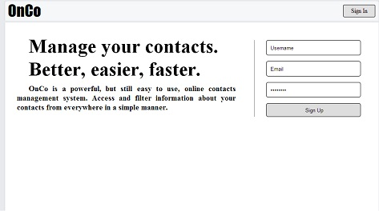
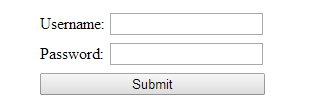
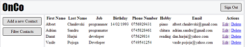
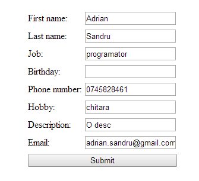
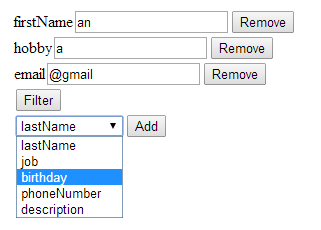

Online Contacts
Ghidul Utilizatorului
Login
In momentul intrarii pe site veti fi intampinat de urmatoarea pagina:

Apasati butonul Sign In pentru a introduce datele de logare.

Completati campurile cu datele dumneavoastra dupa care apasati butonul submit.
Sign Up
Pentru crearea contului trebuie doar sa completati campurile : username, email si password din pagina initiala dupa care sa apasati butonul Sign Up.
Pagina principla
Aici se afla functionalitatile principale ale aplicatiei.


Editare
Pentru editarea contactului apasati pe butonul Edit si completati campurile.
Filtrare
Pentru filtrarea contactelor apasati butonul Fiter Contacts dupa care introduceti tipul de filtrare.

Sign Out
Pentru a iesi din cont apasati pe butonul Sign Out: